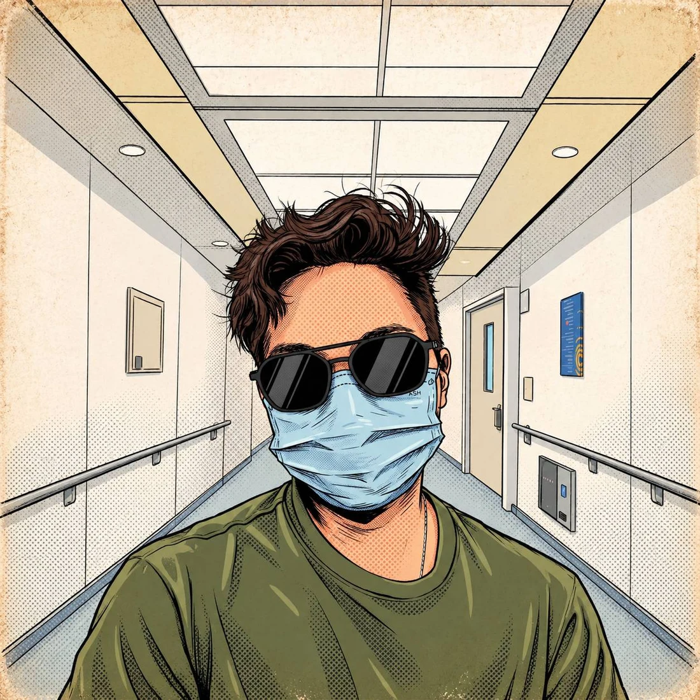
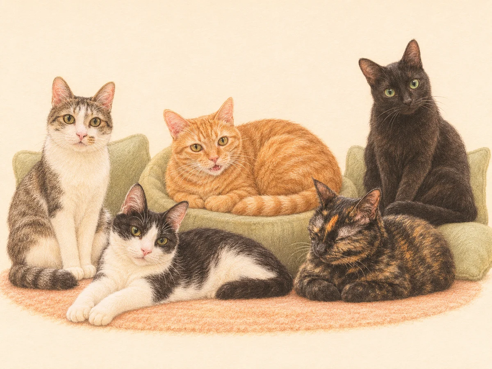
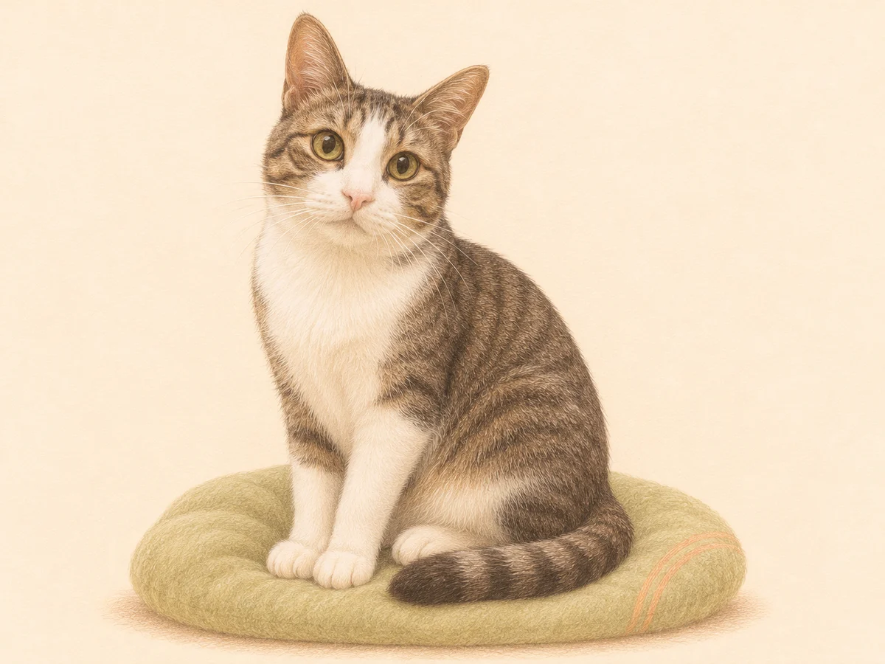

享受生活
旅行、音樂、電影、照顧貓咪，還有生活中那些有趣的小事。
把喜歡的日常，放在心上。A person. Many possibilities.
生活不只有一種可能。
專業教學助理 ｜ 健康管理師 ｜ 生活探索者
嗨，我是 Zero！我在醫學系從事外科教學相關工作。平常喜歡旅行、聽音樂、看電影，也會幫忙照顧貓咪。
我喜歡學習新事物，也喜歡把有趣、有幫助的知識分享給別人。
這裡是 Zero's World，一個記錄我的生活、探索與成長的小天地。希望透過這個網站，讓你更認識我，也期待有機會一起交流、學習，發現生活更多的可能。

Explore my world
專業是我的一部分，
生活也是。
旅行、音樂、電影、照顧貓咪，還有生活中那些有趣的小事。
把喜歡的日常，放在心上。AI、創業、閱讀、人類圖，以及各種還沒試過的新挑戰。
不急著定義自己，繼續好奇。醫學教育、健康知識、分享與陪伴，讓彼此持續成長。
分享所學，也一起往前走。Travel stories
Every trip has a story.
我喜歡到不同的地方走走，吃點當地的東西，看看街上的日常。有時候跟著計畫走，有時候走著走著，就遇到原本沒想到的事。
旅行回來，總有好多想分享的小事。可能是路上遇到的一隻貓，也可能是一段坐錯車才多出來的行程。現在想起來，還是會笑一下 XD。
這裡會慢慢放進我的旅行故事，把沿途的經歷和當時的心情，一篇一篇寫下來。如果你也喜歡這樣邊走邊發現，就進來看看，跟我一起逛逛吧。
走進我的旅行故事About Zero
Still learning. Still becoming.
目前在醫學系擔任專業教學助理，參與外科醫學教育與臨床技能教學，支援動物手術麻醉、實驗外科課程，也負責書田外科訓練中心的場地、設備與行政管理。
我取得了健康管理師資格，對健康、營養與生活習慣充滿興趣。工作之外，從 AI、創業到人類圖，總有新的東西想學。
高中時是樂團吉他手，也曾和朋友嘗試經營麵包店。最近也在幫忙照顧一隻叫辛巴的貓。我不希望自己只被一個職稱定義，也很享受陪別人完成目標、找到方向的過程。
深入了解 ZeroLittle moments with cats

笙飛、曉麓、沐恩（沐沐）、橘子、柚子。我也會幫忙照顧牠們。

這是辛巴，也是最近生活裡多認識的一位貓咪夥伴。
Let's connect
無論從哪個平台過來，
很高興在這裡遇見你。
公開社群網址待提供；設定完成後即可前往。
Join & explore
一些想一起嘗試的事，
正在慢慢準備。
健康、生活與自我探索相關問卷。
分享、活動報名及合作交流。
目前尚未開放填寫或報名；開放後將連至對應問卷或活動頁。